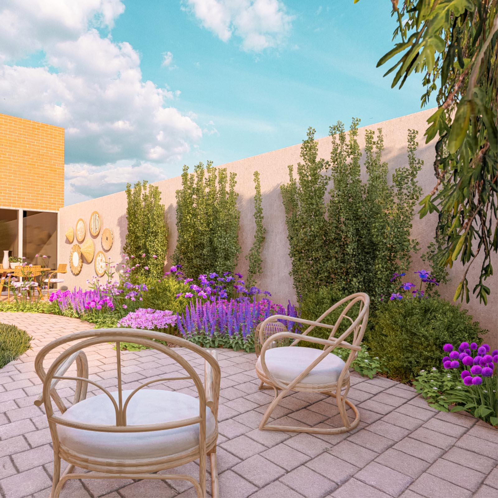
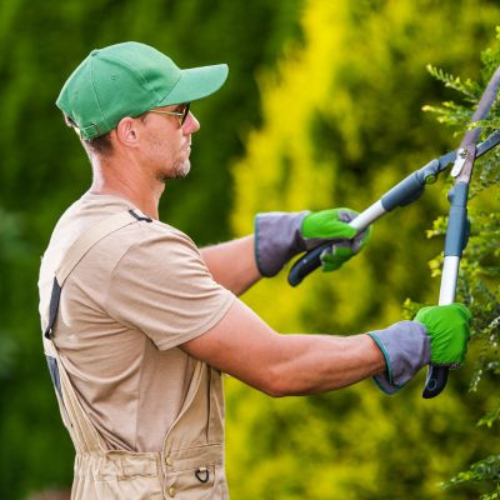

SERVICIOS
¿QUÉ SERVICIOS TE OFRECEMOS?
Servicios de paisajismo y jardinería en Pozuelo de Alarcón
Nuestros proyectos tratan de ser sostenibles de principio a fin, desde la primera fase de análisis de la situación de partida donde estudiamos el entorno donde se va a implantar el jardín para seleccionar en la fase de diseño las especies vegetales adaptadas a él y seleccionar todos los materiales, en la medida de lo posible, de la zona del proyecto para promover la economía local y reducir la huella de carbono.
En la fase final de cuidado y mantenimiento del jardín también tratamos de ser responsables y respetuosos con el medio ambiente, tratando siempre de no usar productos químicos a no ser que sea estrictamente necesario.
Diseño de Jardines
Creación de espacios verdes personalizados que se adaptan a tus necesidades.
Mantenimiento de Jardines
Mantenimiento regular para asegurar que tu jardín se mantenga en perfectas condiciones.
Asesoría en Jardinería
Consejos profesionales para ayudarte a cuidar tu jardín de manera eficiente.
¿QUIÉNES TRABAJAN EN GREENSCAPE?

Ana y Flor
Experto en paisajismo con más de 10 años de experiencia en el sector.
Edul Khuy
Diseñador de jardines creativo y apasionado por la naturaleza.
Green Lovers
Especialista en jardines paradisiacos.